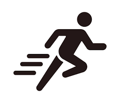
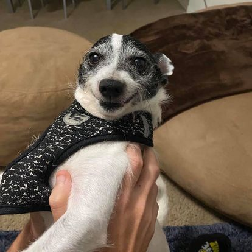

When I'm not in class, you can find me:
Running
I've been running for about 10 years now. I started as a complement to my boxing regiment, which I used to compete in. As I got older, I quit boxing but kept running. I've ran roughly 15 half marathons with the hopes of running a full marathon next year. As of now, I only run about 15 or so miles per week, but it's still a good destressor and a way to get away from the computer and stay active.
Walking My Dog
I spend a lot of time with my dog, Puchi. I've had him for about 4 years now, and while he is too small to run with me, he enjoys going on several walks per day with me, just around the neighborhood or on the walking trails. He is an almost 10-year-old Jack Russell Terrier mix whom I got from a rescue. Since I work and study from home, he's usually on my lap for most of the day.